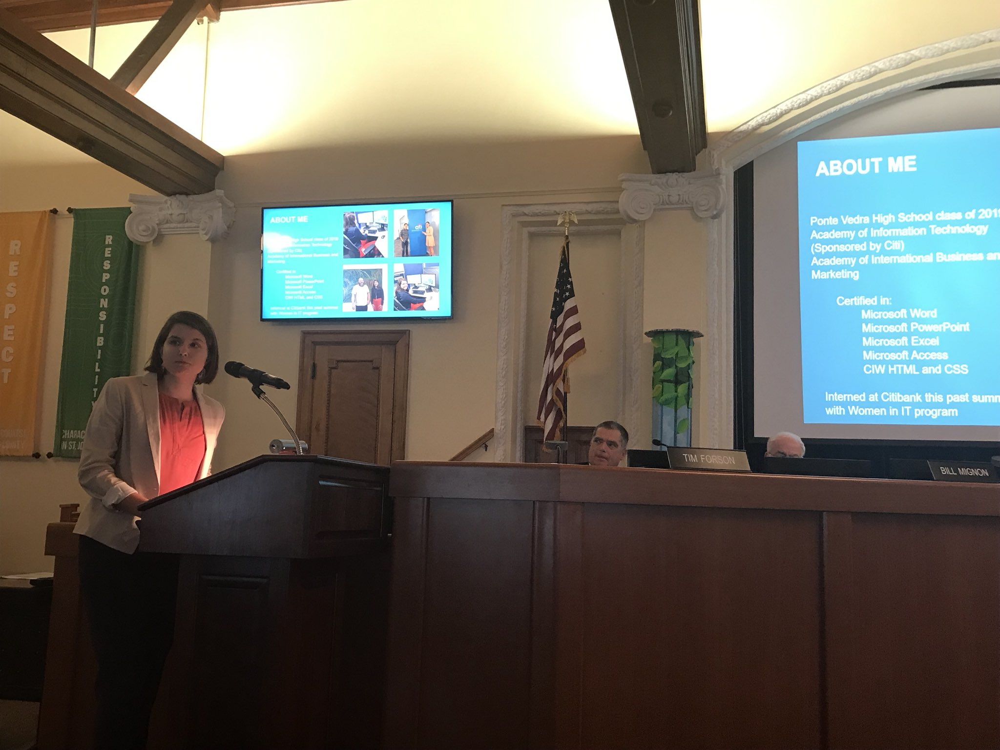

-15% growth in the next decade for all IT fields
-Median annual salary: $131,600
-Median beginning salary: $65,000
-Highly in demand field
-Working for one of the "Big 4 Firms" (PricewaterhouseCoopers, Deloitte, Ernst and Young, and KPMG)
would be the best coming out of college.
Obstacles
-As this field is in great demand, getting a job is not difficult
-Passing the CPA exam is very costly and tough,
one cannot be employed as an accuntant or auditor without this exam.
-Some companies will pay for your exam fee
-Most management IT jobs require past experience, and this may be hard to achieve.
-One might have a hard time understanding concepts.
 Leah
Leah